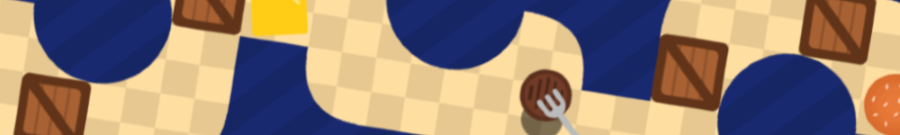

Hiya, welcome to the page. This is serving as a hub for all things alakazamburger, complete with links to all the projects I'm proud of. Thanks for visiting :)
Any dotted underlines you find are tooltips, which I've peppered around this page - hover over them for fun bonus comments!
In the future I may add a nice swish menu, some sort of background, maybe even a puzzle. Watch this space.
𓆝 𓆟 𓆞 𓆝 𓆟
Good question. I'm not sure either.
No seriously,
I can't tell you because I don't have a justification...
I must've seen the words "alakazam" and "hamburger" at similar times, and decided to portmanteau the two.
~ ~ ~ ~ ~ ~ ~
Below are some hyperlinks to projects of mine.
Don't expect anything top-notch - because, well, I'm not top-notch. Expect middle-notch.
* * * * * * * *
If you want to look around the GitHub repos for my pages - or any GitHub Pages page - use my custom bookmark code.
Create a new bookmark and set the URL to be the following:
javascript:var username = location.hostname.split(".github.io").join(""); var path = location.pathname.slice(1); var slashIndex = path.indexOf("/"); if (slashIndex != -1) {path = path.slice(0,slashIndex)}; (function(){window.location.assign(location.protocol+'//'+'github.com:'+location.port+'/'+username+'/'+path)})();
To use it, go to a GitHub Pages page and click the bookmark while on it; this should redirect you to the repository.